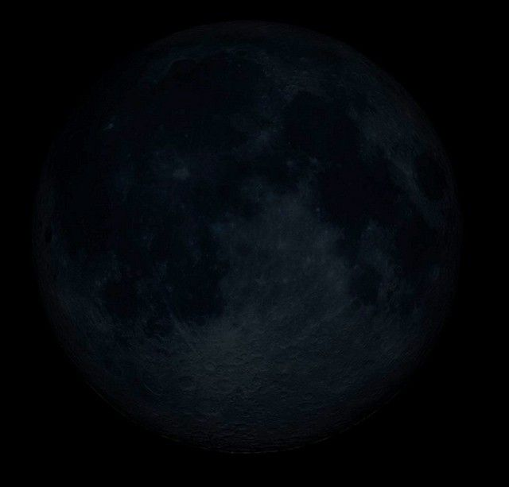
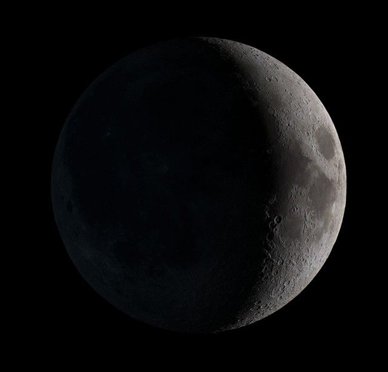
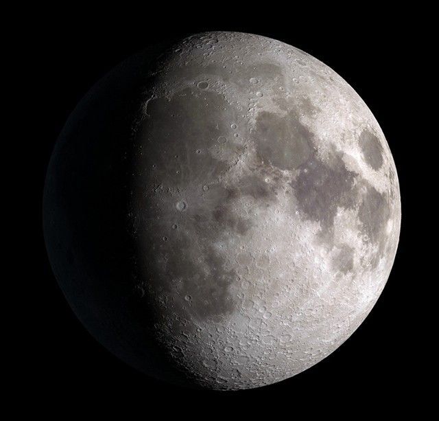
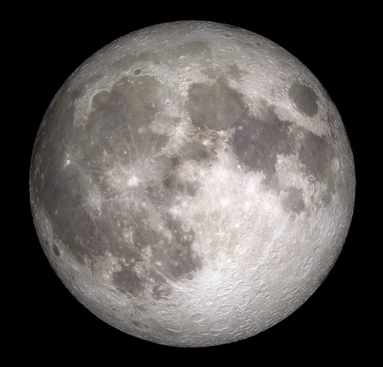
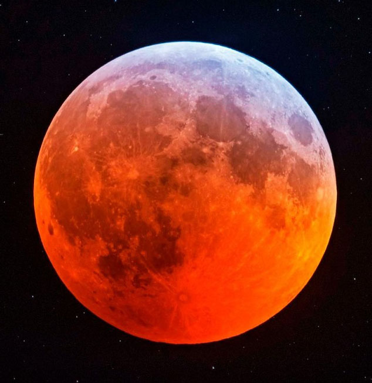
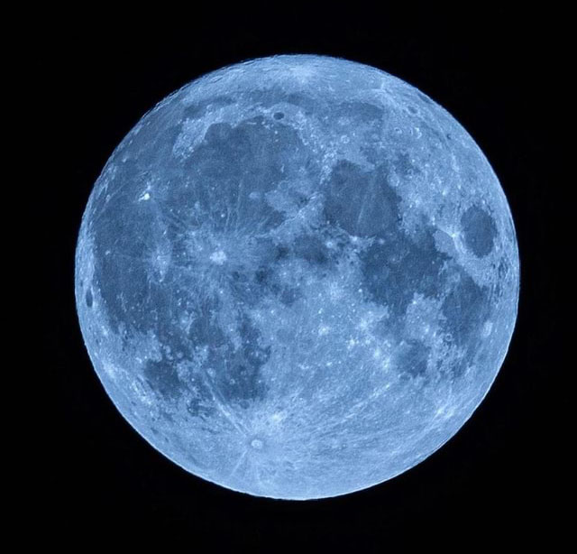
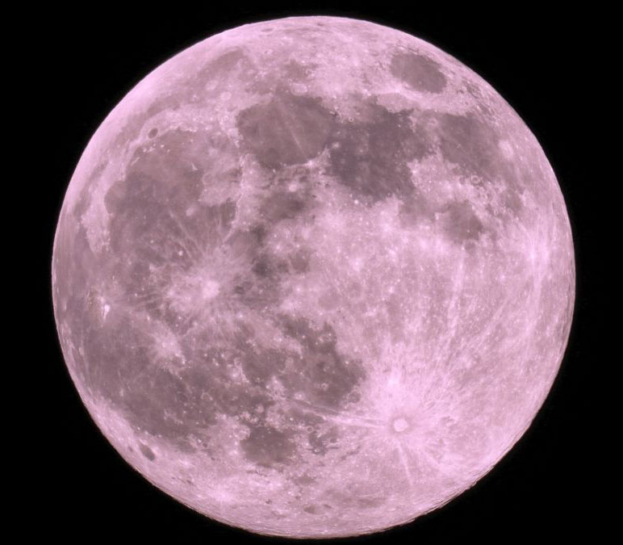

New Moon
This is the invisible phase of the Moon, with the illuminated side of the Moon facing the Sun and the night side facing Earth. In this phase, the Moon is in the same part of the sky as the Sun and rises and sets with the Sun. Not only is the illuminated side facing away from the Earth, it’s also up during the day! Remember, in this phase, the Moon doesn’t usually pass directly between Earth and the Sun, due to the inclination of the Moon’s orbit. It only passes near the Sun from our perspective on Earth.

Waxing Crescent
This silver sliver of a Moon occurs when the illuminated half of the Moon faces mostly away from Earth, with only a tiny portion visible to us from our planet. It grows daily as the Moon’s orbit carries the Moon’s dayside farther into view. Every day, the Moon rises a little bit later.

First Quarter
The Moon is now a quarter of the way through its monthly journey and you see half of its illuminated side. People may casually call this a half Moon, but remember, that’s not really what you’re witnessing in the sky.

Waxing Gibbous
The gibbous Moon phase occurs when the dark part of the Moon is a crescent, and the majority of the Moon's face is illuminated.

Full Moon
The Full Moon is the phase of the Moon when the entire side of the Moon facing Earth is fully illuminated by the Sun, so it appears round and very bright in the night sky.

Blood Moon
A blood moon happens when Earth passes between the Sun and the Moon, and Earth’s shadow falls on the Moon. The light that reaches the Moon passes through Earth’s atmosphere, which makes the Moon appear red.

Blue Moon
The Blue Moon does not mean the Moon turns blue. It is a term used in the calendar for an extra full moon.A Blue Moon is the second full moon that occurs in the same month.
This happens because the Moon cycle is about 29.5 days, so sometimes a month can have two full moons.

Pink Moon
The Pink Moon is called “pink” not because the Moon turns pink, but because it is named after pink flowers (moss phlox) that bloom in spring in North America.